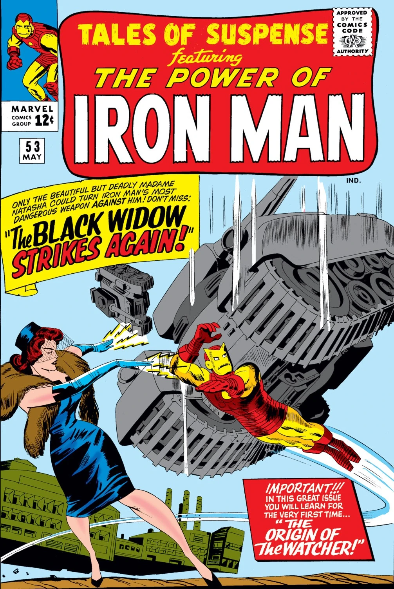

Elle apparaît pour la première fois dans Iron man 2.
Alors qu'il enchaîne les contrats, Tony Stark rencontre Natasha Romanoff. Subjugué par son charme, il lui demande de devenir sa secrétaire et celle-ci accepte.
C'est une des meilleurs espionnes et une membre fondatrice des Avengers.
Elle commence sa carrière enfant, dans la Red Room, en Russie.
Elle devient une machine de guerre, programmée pour tuer.
Après la destruction du North Institute,
elle subit un conditionnement psychologique renforcé
et fut finalement graduée de la Chambre Rouge en tant que Veuve Noire.
Travaillant comme agent du KGB,elle fut ciblée par le S.H.I.E.L.D.
avant de recevoir l'ultime chance de déserter grâce à Clint Barton
en assassinant Dreykov.


Si elle n'est qu'apparue qu'en 2010 sur le grand écran... Ses origines remontent bien avant.
Sa véritable première apparition datent d'Avril 1964 dans le comic Tales of Suspense Vol 1 52. Un comic écrit par Stan Lee et N.Korok.
La Veuve Noire et Boris doivent se débarrasser de Vanko et de Stark.
Une fois arrivés, Black Widow se présente comme "Madame Natasha" et Boris comme professeur d'Ukraine.
Tony est captivé par la beauté de Widow et propose de l'emmener dîner.
Le film BLACK WIDOW est sorti en 2021. Juste après AVENGERS:ENDGAME.
Si vous êtes totalement fan de Natasha et ses répliques sarcastique, ce film est fait pour vous.
On y retrouve David Harbour que vous avez sûrement croisé dans la série Stranger Thing et Florence Pugh, l'étoile montante du cinéma américain.
Bande Annonce VF
.jpg)